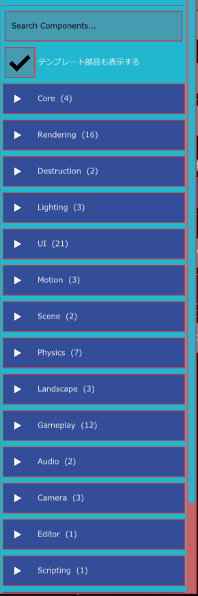

コンポーネント一覧
コンポーネントは、GameObject に付けて機能を足す部品です。たとえば「Mesh Renderer」を付けるとモデルが表示され、「Rigidbody」を付けると物理で動くようになります。このページは、エンジンに入っているコンポーネントを分類ごとに並べた一覧です。
コンポーネントの基本
- 付ける：GameObject を選び、インスペクターの コンポーネントを追加 から選びます（インスペクター）。
- 同じ種類は 1 つの GameObject に 1 つだけ付けられます。すでに付いているものは一覧で「（追加済み）」と表示されます。Audio Source など、いくつも付けられる種類もあります。
- 必須：あるコンポーネントを動かすのに必要な別のコンポーネントです。付けるときに無ければ自動で一緒に付きます。後から外れているとインスペクターに赤で「必須: … がありません」と出ます。
- 推奨：一緒に付けると役に立つコンポーネントです。無くても付けられ、インスペクターに橙で「推奨: … がありません」と出ます。
- Transform は全ての GameObject が必ず持っていて、外せません。

Core
| 名前 | 役割 |
|---|---|
| Transform | 位置・回転・拡大率。GameObject が必ず持つ |
| Pivot | エディターで回転・拡縮するときの基準点を決める |
| State | 名前付きの状態を持ち、変わったことを Motion Player に知らせる |
| Folder | 階層パネルを整理するためのフォルダ（階層パネルの「+ 作成 > フォルダ」で作る） |
Rendering
| 名前 | 役割 |
|---|---|
| Mesh Renderer | モデルファイルを表示する |
| Primitive Mesh Renderer | Cube や Sphere などの基本形状を表示する |
| Skinned Mesh Renderer | 骨で動くモデルを表示する |
| Animator | アニメーションの状態と切り替えを管理する |
| Post Process Volume | ブルームや色補正など、画面全体の仕上げの設定 |
| Water Body | 海・湖の水面（波、反射、屈折、泡、水中の表現） |
| Local Fog Volume | 範囲の中だけに霧を足す |
| Reflection Probe | 範囲の中に、周りの景色の映り込みを足す |
| Probe GI Volume | 範囲の中の間接光（回り込む光）を計算する |
| 空 | 空・雲・星・月の背景 |
| Screen Effect Stack | 3D の画面全体にエフェクトを重ねる |
| Model Effect Stack | モデルの見た目にエフェクトを重ねる |
| Normal Adjust | モデルの法線を寄せて陰影の出方を整える |
| Particle Emitter | 小さな粒を出す（煙、火花など） |
| 3D ライン | 点をつないだ線や帯を描く |
| 軌跡 | 動いた跡を線として残す |
Lighting
| 名前 | 役割 |
|---|---|
| Directional Light | 太陽のように一方向から照らす |
| Point Light | 点から全方向に照らす |
| Spot Light | 円錐の形に照らす |
Camera
| 名前 | 役割 |
|---|---|
| Camera | ゲーム中の視点 |
| Camera Target | カメラに追いかけられる目印 |
| Follow Target | カメラを Camera Target に追いかけさせる |
Audio
| 名前 | 役割 |
|---|---|
| Audio Listener | 音を聞く位置（耳） |
| Audio Source | 音を鳴らす |
Physics
| 名前 | 役割 |
|---|---|
| Rigidbody | 重さや速度を持たせ、物理で動かす |
| Sphere Collider | 球の当たり判定 |
| Box Collider | 箱の当たり判定 |
| Capsule Collider | カプセルの当たり判定（人型に向く） |
| Mesh Collider | モデルの形そのままの当たり判定 |
| Convex Collider | 点の集まりから作る凸包の当たり判定。動く物にも使える（点はコードから渡す） |
| Buoyancy | 水に入った Rigidbody に浮力・水の抵抗・水流の力を加える |
Destruction
| 名前 | 役割 |
|---|---|
| Sliceable | 実行中にメッシュを平面で切り、2 つの破片へ分ける（C++ API） |
| Destructible | 事前に用意した破片を爆発 Damage で分離する（C++ API） |
Landscape
| 名前 | 役割 |
|---|---|
| Landscape | 地形の形のデータ |
| Landscape Renderer | 地形を表示する |
| Landscape Collider | 地形の当たり判定 |
UI
| 名前 | 役割 |
|---|---|
| Rect Transform | UI の位置と大きさ。UI の部品の土台 |
| Canvas | UI を描く領域 |
| Image | 画像を表示する |
| Shape Image | 形（パス）で画像を切り抜いて表示する |
| Sprite Animator | スプライトシートをコマ送りで再生する |
| Text | 文字を表示する |
| Text Animator | 文字を 1 文字ずつ動かす |
| Shape | 四角・円・多角形などの図形を描く |
| Puppet Deform | 画像をピンで変形する |
| Button | 押せるボタン |
| Selectable | キーやゲームパッドで選べるようにする |
| Horizontal Layout Group | 子を横に並べる |
| Vertical Layout Group | 子を縦に並べる |
| Grid Layout Group | 子を格子状に並べる |
| Scroll View | 中身をスクロールして見せる |
| Slider | つまみで値を選ぶ |
| Input Field | 文字を入力する欄 |
| Mask | 子の表示範囲を切り抜く |
| Language Switch | 表示する言語を切り替える |
| Button Property Toggle | ボタンで別のコンポーネントの設定をオン・オフする |
| Effect Stack | UI にエフェクトを重ねる |
Motion
| 名前 | 役割 |
|---|---|
| Motion Player | モーション（アニメーション）を再生する |
| Composition Player | 複数のモーションをまとめたコンポジションを再生する |
| Property Link | ある設定の数値を、別のコンポーネントの設定へ変換してつなぐ |
Scene
| 名前 | 役割 |
|---|---|
| Persistent | シーンが切り替わっても残す |
| Scene Loader | シーンの読み込みの進み具合を表示用に出す |
そのほか
| 分類 | 名前 | 役割 |
|---|---|---|
| Editor | Scene Note | シーンに作業メモを置く（エディター専用） |
| Scripting | Script | C# スクリプトを付ける |
| Navigation | Nav Agent | 目的地まで道を探して移動する |
| UI | Canvas | UI のまとまりの根元。画面に重ねるか 3D 空間に置くか |
| UI | Rect Transform | UI 部品の四角い範囲（アンカー、ピボット、描画順） |
| UI | Image | 画像や色の四角を表示する。塗り量でゲージにもなる |
| UI | Shape Image | Image を自由な形で切り抜く |
| UI | Sprite Animator | スプライトシートのコマを順に表示する |
| UI | Text | 文字を表示する。ローカライズや数値の表示にも対応 |
| UI | Text Animator | Text の文字ごとに動きや色の変化を付ける |
| UI | Shape | 四角・円・多角形・線などの図形を描く |
| UI | Puppet Deform | Image の画像を Pin で部分的に曲げる |
| UI | Button | 押せるボタン。状態ごとの色とモーション |
| UI | Selectable | キーやパッドでのフォーカス移動 |
| UI | Horizontal / Vertical / Grid Layout Group | 子の UI を並べる |
| UI | Scroll View | 中身をスクロールさせる |
| UI | Slider | ドラッグやキーで数値を変える |
| UI | Input Field | 文字入力欄（日本語入力対応） |
| UI | Mask | 子孫を形や画像で切り抜く |
| UI | Language Switch | ボタンで表示言語を切り替える |
| UI | Button Property Toggle | ボタンでほかのコンポーネントのオン・オフを反転する |
| Behaviours | Rotator Behaviour、Trigger Counter Behaviour、Scene Transition | 動作確認用の部品（Scene Transition は触れたらシーンを切り替える） |
| Script / Scripts/C# | （プロジェクトの C# スクリプトの数だけ） | プロジェクトにある C# スクリプト。選ぶと Script コンポーネントとして付く |
Gameplay（テンプレート用）
アクション・プラットフォーマーのテンプレート用の部品です。詳しくは Gameplay 部品 にまとめています。「テンプレート部品も表示する」をオフにすると一覧から隠れます（検索欄に名前を入れている間は表示されます）。
| 名前 | 役割 |
|---|---|
| Character Motor | 移動・加速減速・重力・ジャンプ・接地 |
| Character Input | 操作（デバイスや AI からの入力）を保持する |
| Player Controller | 入力を Character Motor へ渡し、カメラ基準の移動や振り向きを行う |
| Rotator | 一定の速さで回し続ける（動作確認用） |
| Health | 最大体力・現在体力・無敵 |
| Spawn Point | 開始・復帰の地点 |
| Checkpoint | 通ると復帰地点が更新される |
| Goal | ゴール到達のイベントを出す |
| Kill Volume | 落下・即死の領域。復帰も行う |
| Jump Pad | 触れた Character Motor を指定方向へ飛ばす |
| Damage Area | 中にいる Health へ一定間隔でダメージ |
| Enemy Behaviour | 巡回・索敵・追跡・攻撃・帰還を行う敵 |